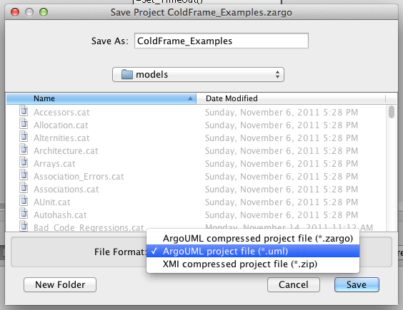
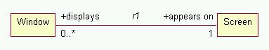
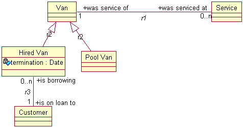

Installation and setup (overall and project-specific) is covered elsewhere.
However, ArgoUML's default format for saving a project is in a zip-compressed .zargo file. Compressed (ie binary) files don't work very well with most revision control systems, so (although ColdFrame will handle .zargo files) it's probably best to save in .uml form.

It's not possible here to give a detailed tutorial on the Executable UML approach, though some thoughts are presented here. Leon Starr's book is an excellent reference. Note also that complete Executable UML support involves full translation of the code of operations and actions as well as the generation of the framework which is all that ColdFrame attempts (this year).
You will need to avoid using certain names in your models, because they are already used by ColdFrame's implementation.
The actual reserved names depend on the translation rules adopted, and are specified with the target platform.
Instances of a Class must be uniquely identifiable by some attribute or combination of attributes. For example, a Vehicle Excise Disk (a UK thing, up to October 2014: the circular document you displayed on your car's windscreen to show you'd paid the annual road tax) might be identified by the combination of Vehicle Index Mark (the licence plate number) and Validity Start Date. Vehicle Index Mark and Validity Start Date then become "identifying attributes", whereas Date Of Issue and Period Of Validity are just common-or-garden attributes.
In ColdFrame, you must not specify identifiers for
All other classes must have identifiers. In this, ColdFrame doesn't follow Executable UML; it seems risky to apply too many defaults.
For the case where there's no suitable naming attribute, ColdFrame provides the attribute type Autonumber (rather like the Microsoft Access feature it's named after): each newly-created instance gets a new value.
Role names in associations are very important, and should be verbs or verb phrases. Each end of the association must be named; the object of the verb phrase is the class at the same end as the name, the subject is the class at the other end. So, for example, you might have Window "appears on" Screen, Screen "displays" Window.

Often the role names will be inverses of each other, but sometimes things really do seem different depending on where you're standing.
You need to think carefully about the multiplicity of associations; they capture application rules and policies, which it's important to get right.
Clearly each Screen "displays" a number of Windows, but can a Window "appear on" more than one Screen? (perhaps, if you have multi-headed display capability). Can you have a Window which "appears on" no Screens? (well, no, not if your display technology is X--in which case "appears on" may not be quite right either, since the application could be iconised).
Unconditional multiplicity is good; if each end of an association is conditional (0..1, 0..n), maybe you should think more carefully about it. Perhaps there's some super/subtype (inheritance) relationship lurking in there.
Most programming languages implement inheritance in a way that supports static classification (a Cat is-a Animal). Once you've got a Cat, an Animal it stays!
On the other hand, if you're thinking at the analysis level, you can see that at different stages of its lifecycle an object can take part in different relationships.

The attribute termination only has meaning if the van is on hire (it's the date when it's due back), so we shouldn't leave it lying around in the parent Van class. Also, the association r3, Hired Van is-on-loan-to Customer is unconditional, which is good.
Note also the way r1, which maintains the service history of the Van, is independent of whether the Van is currently hired out or in the pool.
ColdFrame expects the set of child instances to be complete, which is why Pool Van appears in the model above. Every Van must be either a Hired Van or a Pool Van. This only actually shows up in implementing dispatching operations; if you try calling a dispatching operation for an instance without a current child you'll get a Constraint_Error. Often you'll find something interesting to say about all the child classes; in the example, it seems likely that only Pool Vans can be sent for servicing.
ColdFrame supports polymorphism. Instance operations marked abstract are dispatched to the current child (skipping down the inheritance tree until a concrete implementation is found), while a child class receives upward-dispatching implementations of all normal concrete parental instance operations.
Resist the temptation to put containers in the model. In Window "appears on" Screen, the association itself models the user concept of "each screen displays a list of windows" (actually, thinking about it, I'm not at all sure that the actual user ever had the concept "list" in mind at all. They're much more likely to have said "each screen displays a number of windows". I think this "list" was implanted there by some ex-programmer with a solution in mind, rather than by someone listening to the customer!)
In the original Shlaer-Mellor method, associations and inheritance relationships needed to be "formalised" by the use of "referential attributes". Considering the Window "appears on" Screen, where clearly there are many Windows but only one Screen, you'd need a referential attribute screen id in the Window instance.
ColdFrame, however, follows Executable UML; you usually don't need to provide referential attributes (it would be quite cumbersome to do so, since ArgoUML, a typical UML tool, is unaware of the concept). Instead, ColdFrame automatically implements the relationships. Sometimes it needs a little help, for example for complex formalization or in a symmetric association.
These are some examples of the more common uses of stereotypes. The full list of ColdFrame's stereotypes, tagged values and basic types are listed in the profile.
ColdFrame searches the ArgoUML .uml file for packages stereotyped «domain». All the classes, types and relationships that make up the domain are in this package and its children (recursively).
You may find it handy to reduce clutter in the browser panel by putting some classes into child packages; for example, all the types.
To make unit tests easier, it can help to separate those Public classes and types in the domain that form the interface it presents to other domains into one of the child packages, stereotyped «domain-interface» (and, by convention, called Domain Name Interface).
The ArgoUML implementation of DataType doesn't provide any visualisation of types with attributes, so classes which represent user-defined types are marked with the stereotype «datatype».
Classes of which there is always precisely one instance are marked with the stereotype «singleton».
Public classes, which are the only classes visible from outside the Domain, are marked with the stereotype «public». This implies the stereotype «singleton». Public classes can't take part in relationships.
Identifying attributes are marked with the stereotype «id».
Operations to be called from the Domain Initialize procedure are marked with the stereotype «init». These operations must be parameterless procedures.
If an operation used as a state machine action deletes the instance, it must be stereotyped «final».
Operations to be called to clean up as an instance is deleted (for example, to tidy up associations) are marked with the stereotype «finalize». (It would be possible in theory to use Ada's controlled types, but that depends on your target language being Ada). Also, it's possible to have more than one «finalize» operation.
In UML 1.4, tagged values are considered to be properties of stereotypes, so ColdFrame specifies which tagged values are permitted for each stereotype in the profile.
In previous versions of ColdFrame, using Rational Rose as the front end, this was not the case, and tagged values could be inserted freely in, for example, documentation sections. This feature is no longer available.
In previous versions of ColdFrame it was possible to support extensions:
Any unrecognised tagged values are included in the normalized XML as attributes, so that you can add your own post-processing (for example, special code generation methods).
This is no longer the case; an equivalent facility may be reintroduced in a future release.